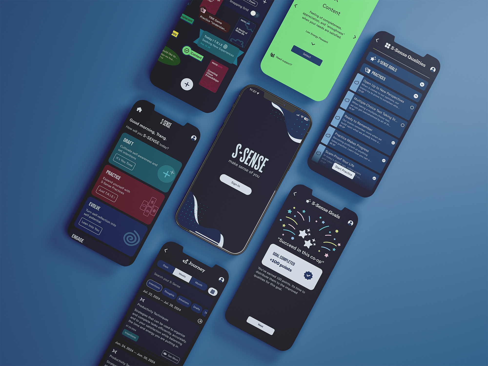
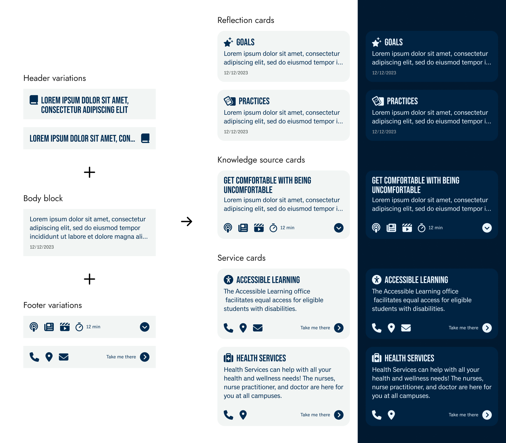
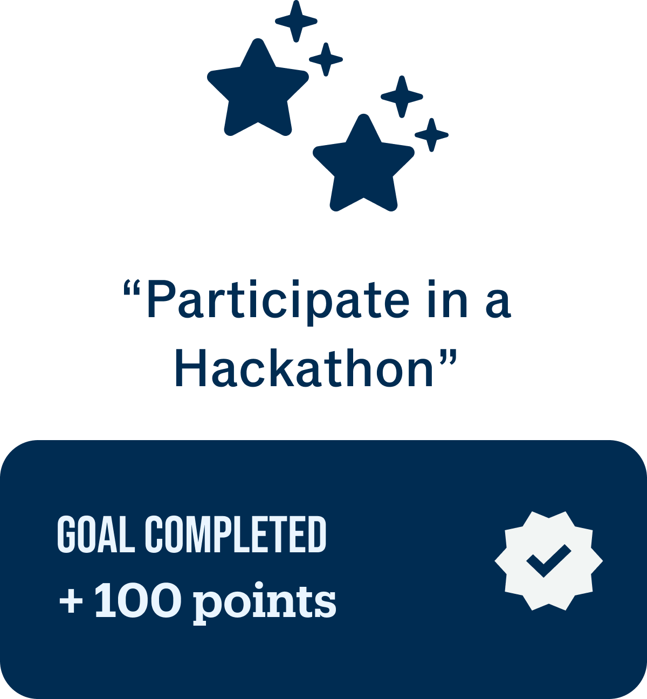
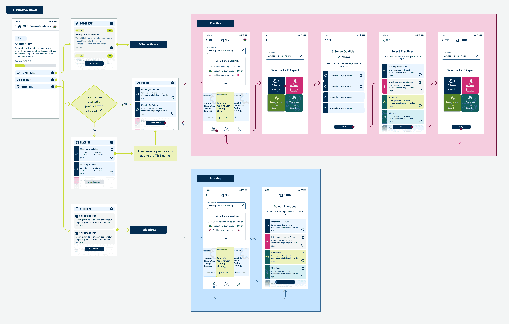
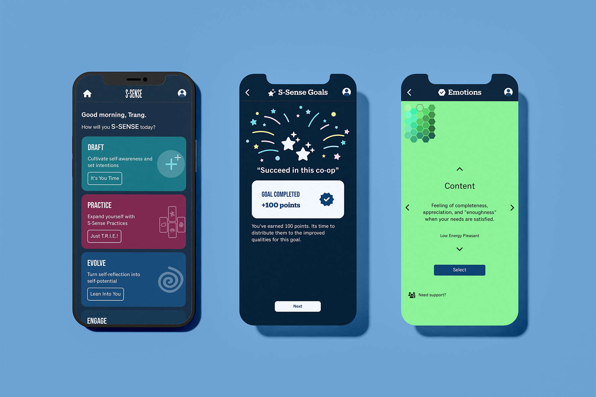

Improving consistency in UI and user flows for the Sheridan S-Sense app
Overview
Starting June 2024, I joined the S-Sense team at Sheridan College as UI/UX and Graphic Design, first as a co-op student and then continuing on a part-time capacity. While my main responsibility was designing mobile user interfaces, I got the chance to work on the Figma design library, research best practices, and document all interactions in one comprehensive map. Here are some highlights of my experience.
Role
UI/UX and Graphic Designer
Tools
Figma, Jira, Notion
Timeline
Jun – Dec 2024
Design System
Contributing to and maintaining the design library in Figma
Our design library at the time was in progress. Since the colours, text styles, and basic components were already set up, my primary task was to finish the card components. I experimented with the Material Design component library to learn about nested components. Through trial and errors, I leveraged building blocks, instance swapping, and boolean variables to create customizable components. This improved consistency across screens and hand-off to developers.

Motion Design
Making custom animations with Figma and LottieFiles
The team wanted to gradually integrate simple animations, one of which is a celebration animation when a student completes a goal. I animated the sequence in Figma, then exported it as a JSON file using the LottieFiles plugin.
Click or tap on the image to see the animation!

Research
Looking into and documenting best practices
As we started implementing sound effects, animations, and haptics, I was tasked to research best practices and document patterns (for sound effects and haptics). I also looked into navigation patterns to resolve inconsistent navigation between iOS and Android devices.
Some research notes into best practices for sound effects, haptics, and cross-platform navigation.
Wireflow
Documenting interactions through a comprehensive wireflow
Because we're often looking at each feature individually, we missed inefficient flows when different features connect. A comprehensive wireflow would've help us review the overarching interactions. I started with mapping out the current interactions, flagged the redundant or inefficient steps, then mapped out the improved flows.

Teamwork
Collaborating with cross-functional team
I practiced articulating design decisions to stakeholders and non-designer teammates, and learned to navigate different expertises and backgrounds. It was intimidating at first to present my work and hand my designs off to the developers, but their support and enthusiasm helped me gain more confidence in my work.
